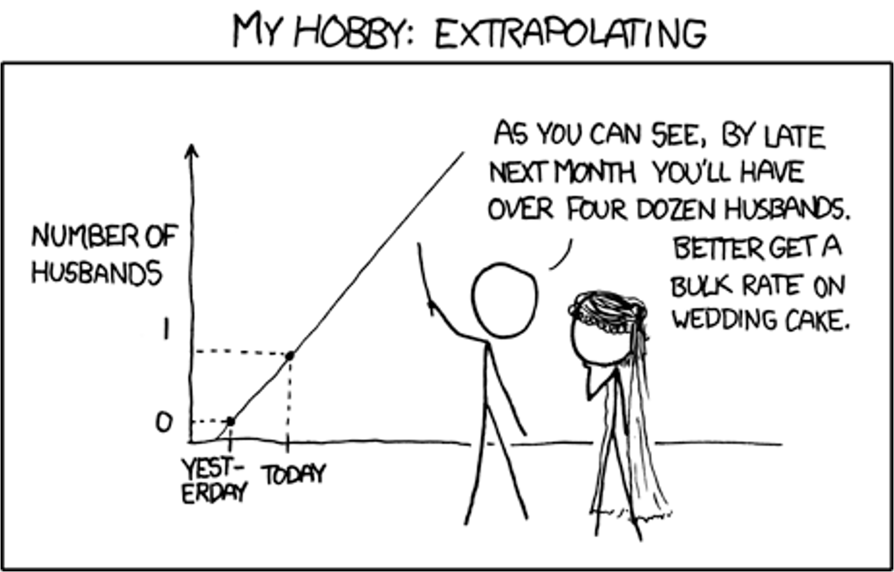
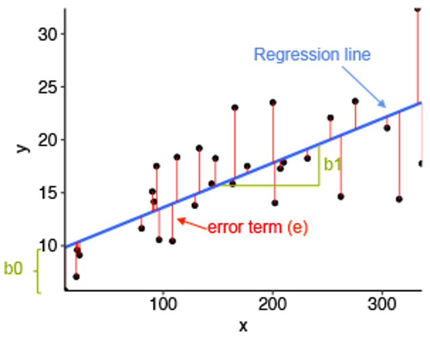
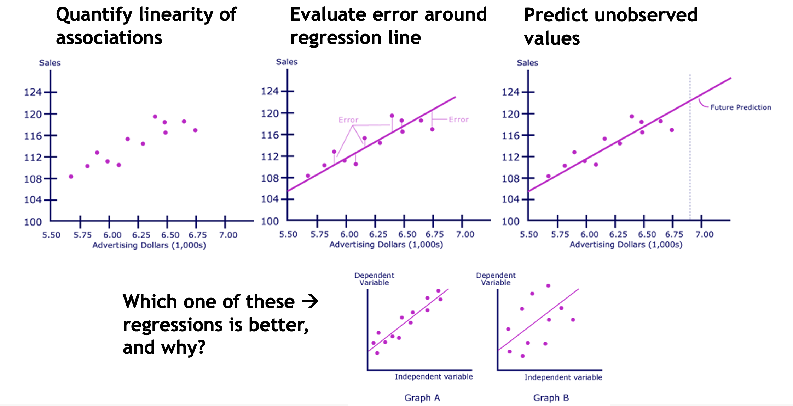
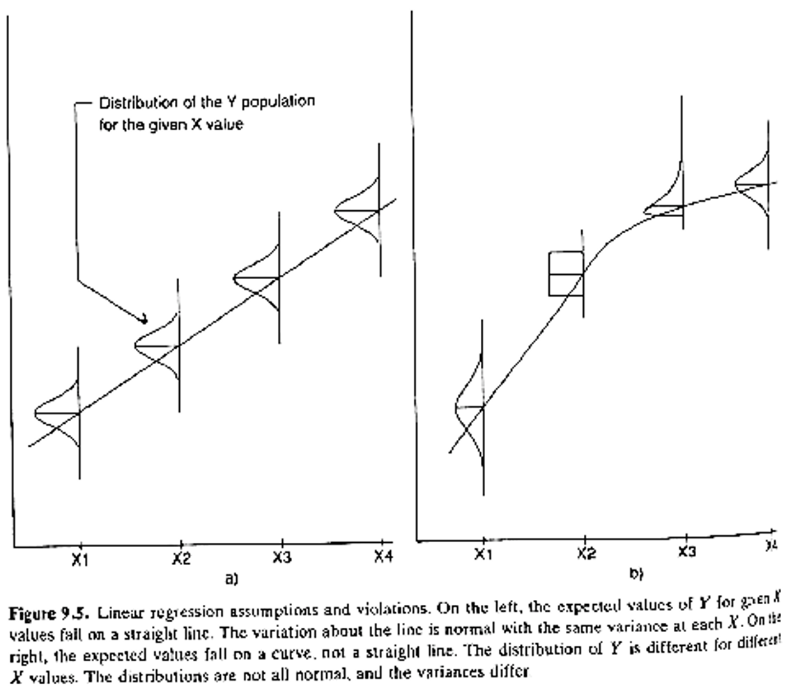
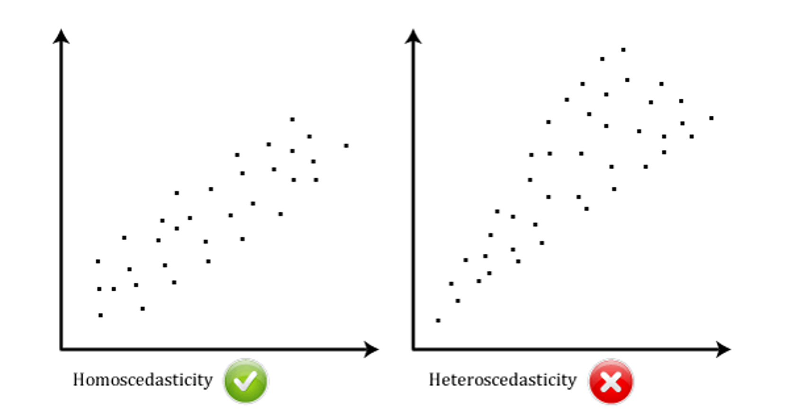
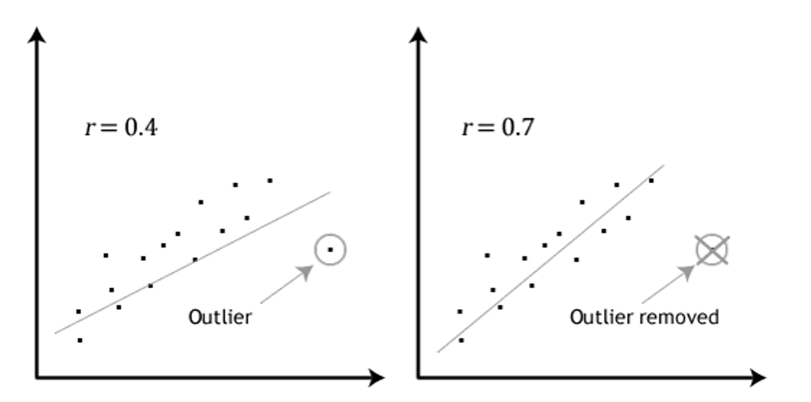
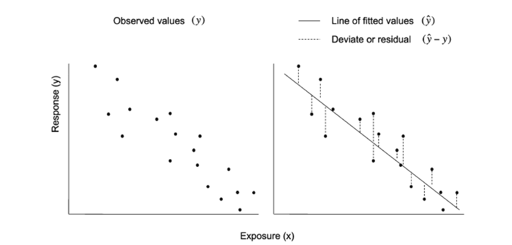

Inferential statistics - linear regression (Lecture 12)
Click to view catchup R code
# set your working directory with `setwd()`!!# load packages we needlibrary(tidyverse) # data manipulation and plottinglibrary(readxl) # reading in our excel datasetlibrary(janitor) # cleaning columns names and more# set the theme of all ggplots to `theme_minimal()`theme_set(theme_minimal())# read dataset excel file and make sure it's a tibbleehs655 <-read_xlsx("Dataset V1.xlsx") %>%as_tibble()# make all column names lowercase and snake_caseehs655 <- ehs655 %>%clean_names()# clean job title variable to remove misspellingsehs655 <- ehs655 %>%mutate(job_title =case_when( job_title =="Lborer"~"Laborer", job_title =="Laboerr"~"Laborer", job_title =="Electrican"~"Electrician", job_title =="Carpentr"~"Carpenter", job_title =="Operaing engineer"~"Operating engineer", job_title =="Ironworkr"~"Ironworker", job_title ==""~NA,.default = job_title))# clean gender variable to fix multiple classification schemesehs655 <- ehs655 %>%mutate(gender =case_when( gender =="M"~"Male", gender =="F"~"Female",.default = gender))# convert LEQ values <LOD to LOD/sqrt(2)ehs655 <- ehs655 %>%mutate(work_leq_d_ba =ifelse(work_leq_d_ba <70, 70/sqrt(2), work_leq_d_ba))# estimate time-weighted averages for each shiftehs655 <- ehs655 %>%mutate(TWA = work_leq_d_ba +10*log10(measured_shift_length_mins/480))# estimate peakiness for each shiftehs655 <- ehs655 %>%mutate(peakiness = lmax_d_ba_shift/work_leq_d_ba)# dropping bad cases of TWA and Lmax based on calibrationehs655 <- ehs655 %>%mutate(TWA =ifelse(post_cal_value_d_ba <113.5| post_cal_value_d_ba >114.5,NA, TWA)) %>%mutate(lmax_d_ba_shift =ifelse(is.na(TWA),NA, lmax_d_ba_shift))# keeping only good cases of 70 <= Lmax <= 140 dBA based on physical boundsehs655 <- ehs655 %>%mutate(lmax_d_ba_shift =ifelse(lmax_d_ba_shift <70,70, lmax_d_ba_shift)) %>%mutate(lmax_d_ba_shift =ifelse(lmax_d_ba_shift >140,140, lmax_d_ba_shift))
What we’ll cover today
Linear regression

Linear regression
Simple linear regression estimates straight line
\[
\hat{Y}=\beta_0+\beta_1 X_1
\]
Where
\(\hat{Y}\) is predicted value of response variable \(Y_i\) for given value of predictor variable \(X\)
\(\beta_0\) is intercept (value of response at predictor = 0)
\(\beta_1\) is slope (average change in response for unit change in predictor variable)

Things we can do with regression

Regression
Closely related to ANOVA
Both provide point estimates for parameters that describe mean exposure under given set of conditions
Differences
In ANOVA, all independent variables treated as categorical
In regression, mixture of data types allowed (!)
Regression assumptions
Continuous dependent variable
Continuous or categorical indep variable
Linearity
Normality (or large n)
Equal variance within groups
(Assumptions relaxed with robust regression)

Regression assumptions
Equal variance across range of data (homoscedasticity)

Regression assumptions
No significant outliers

Least squares regression
Residual is distance from each point to fitted line

Least squares regression
“Best” estimate for line is one that minimizes sum of squared residuals
Where
\(SS_{res}\) is squared sum of residuals between observed values of \(Y\) and values of \(\hat{Y}\) predicted from regression equation
\[
SS_{res}=\Sigma[Y-\hat{Y}]^2
\]
Least squares
Null hypothesis in linear regression: \(b\) (slope) = 0
To test this, program computes ratio of magnitude of slope to precision with which it is estimated (standard error)